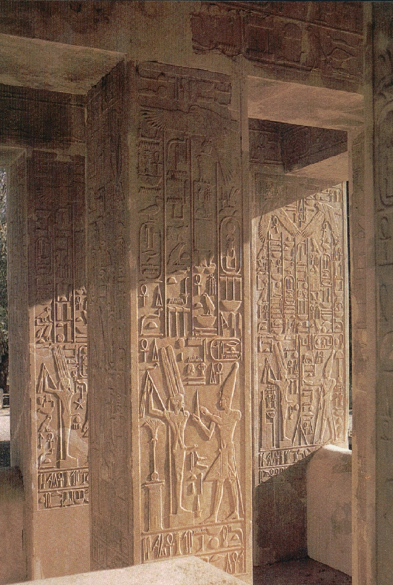

The White Chapel
Scroll to the bottom for an explanation with interpretations. These are instructions for revamping the life force, transformation of the soul and becoming a God. This is Satan's Gift to humanity.

Note, the above, the closest wall to the view of the picture:
- The God is directing his sexual energy into his 3rd eye.
- His feathered headdress indicates the lightness of feeling that comes with
this energy working.
- The other God is holding a cone shaped object, this I believe indicates
concentration of energy, as the base is wide and the apex tapers to a point.
The concentrated energy is directed into the 3rd eye.
- Beneath the God with the feathered headdress' penis is a loop like object,
indicating the circulation of sexual energy.
- Above, in front of the God holding the cone is an Ankh, before the ankh is
another cone, indicating the concentration of the life giving sexual energy in
the ankh.
- The God holding the cone is wearing a different headdress than the God who
is directing his energy. It is apparent the God with the cone is
instructing him. He has not yet reached the higher level of the God holding
the cone. This can be seen in the headdress which is a double feather,
indicating he has reached the stage where he feels the levetivity. The
headdress on the other God has a serpent (cobra) protruding from the front
where the 3rd eye is, indicating he has achieved the ascension of the
serpentine energy of kundalini.
- Above the God with the feathered headdress, there are images of the
serpent, the cone of concentration and the ankh.
- On the opposite side is a cartouche, depicting a scarab with a ball above
it. Directly beneath the cartouche appears to be readiating energy, the lines.
Beneath this are the feathers of lightness. Directly beneath another cartouche
containing an eye shape which I believe represents the 3rd eye again.The
looped symbol. This indicates this God standing opposite the god with the
feathers has achieved mastery and immortality. Look at the above carvings as
opposed to the God with the feathered headdress. There are 2 feathers,
indicating he has already accomplished this stage, has moved on to bring up
his energy and reach transformation and rebirth indicated by the scarab of
immortality.
- The God on the rear wall is at a lower stage indicated by the serpent and
the Ankh being at a much lower level. The ball beneath his penis indicates the
building of the ball of energy through orgasm up in the 8-9th chakras of the
4th dimension.
- The God on the farthest wall in front, has a loop shaped object, directly
beneath his penis indicating again, the circulation of sexual energy. The way
to immortality.
- All three depictions are at different levels of achieving the goal of
immortality.
The Gods left these carvings in stone for those of us who are enlightened
enough to read and understand them, as they cannot be altered. They are
instructions and the heiroglyphs are deeply religious. Those of us who
understand are to teach and enlighten the rest.
-High Priestess Maxine
NEXT PAGE